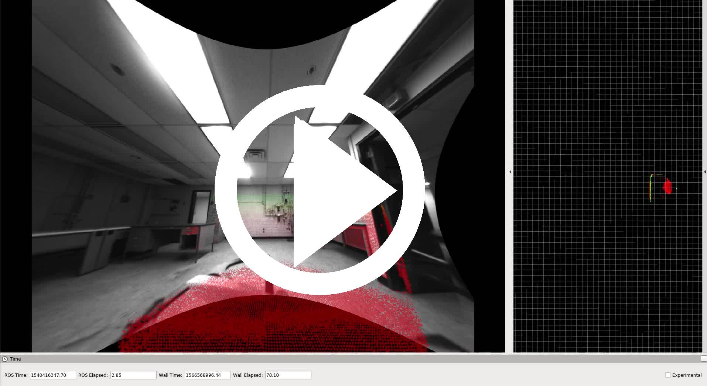
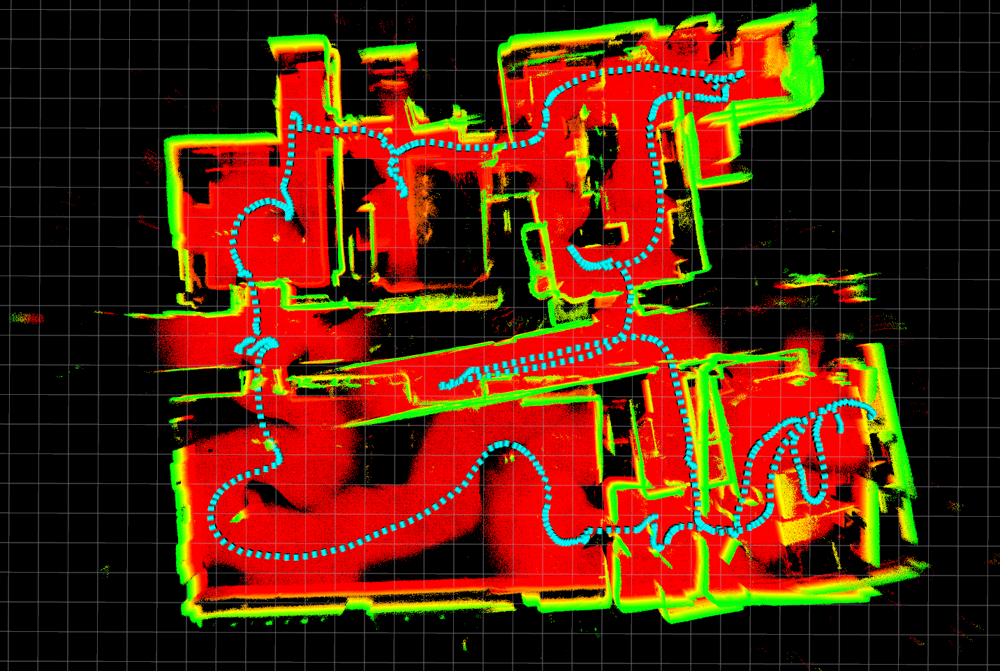
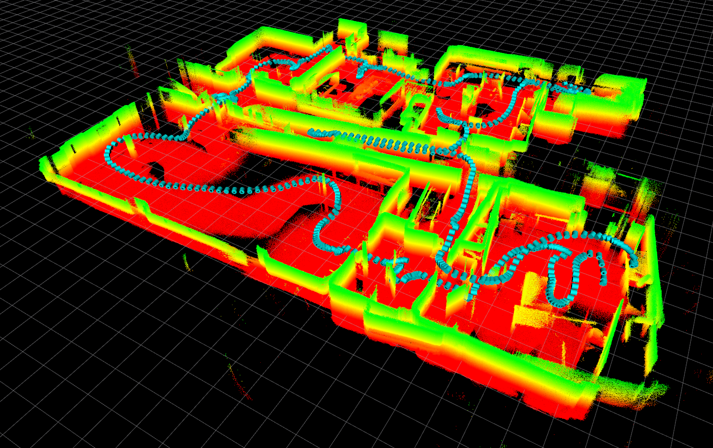
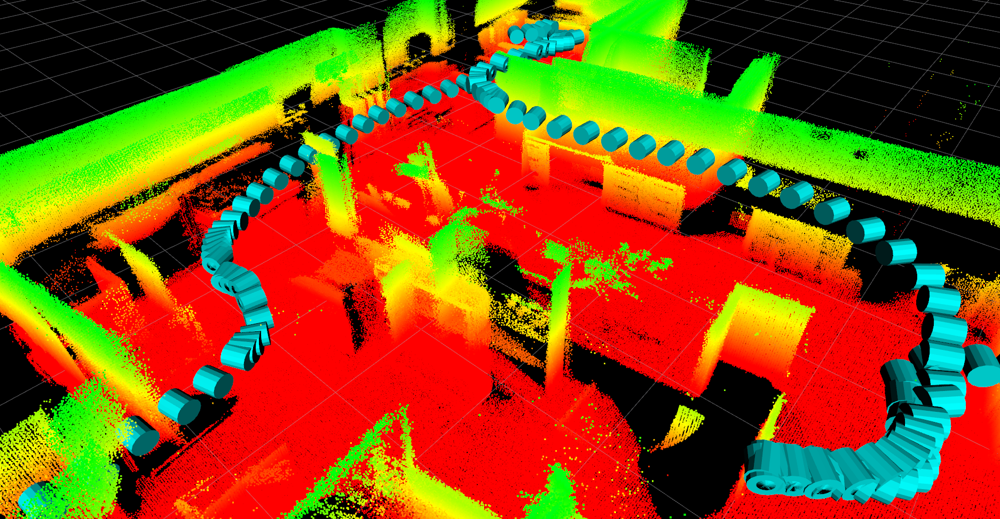
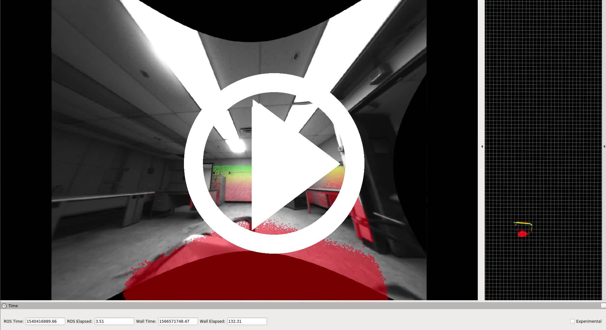
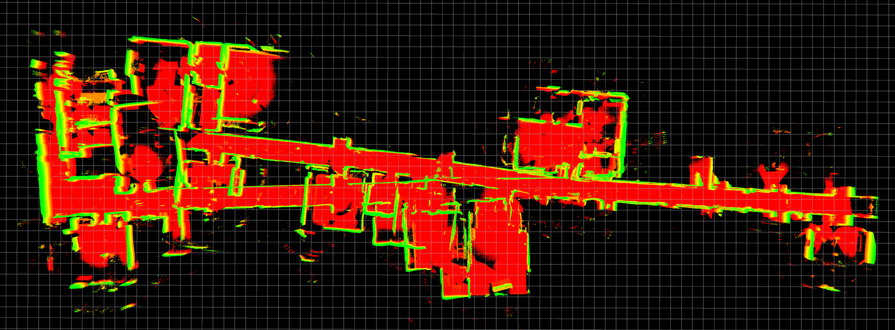
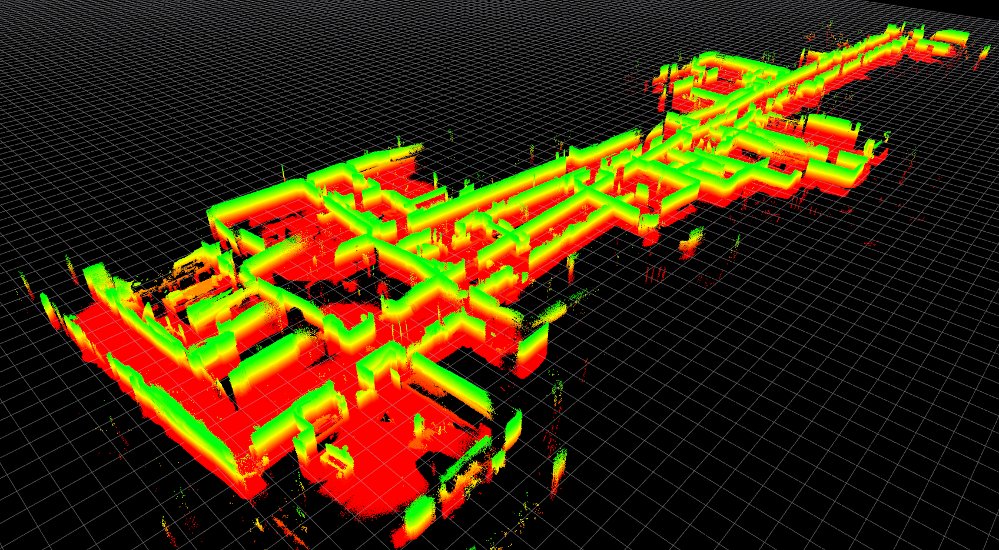
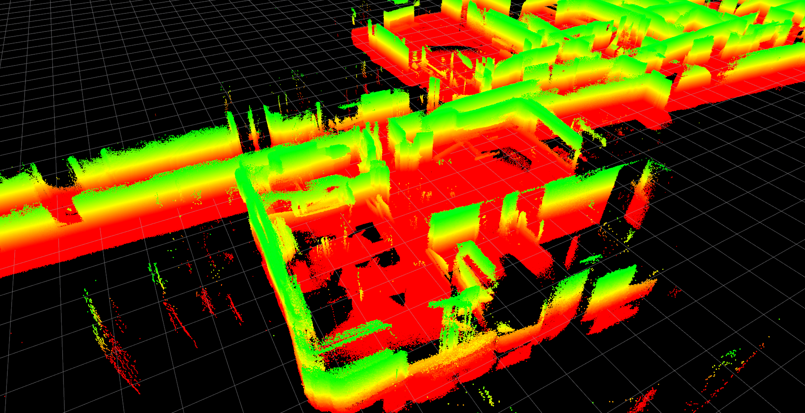

2018-10-24
2018-10-24-17-25-45
| Short loop on the 2nd or 3rd floor of building 227. The illumination is at times poor. | ||
|  | ||
|  |  |  |
| sensor rig: Falcon 250, configuration 3 | location: Building 227 | |
| duration: 215s | ||
| approx path length: 118m | altitude difference: 1.35m | |
| median/maximum velocity: 0.55 / 1.42 m/s | median/maximum angular velocity: 0.35 / 1.49 rad/s | |
| environment: indoors | lighting: artificial | tags: no |
| rosbag with raw data (14Gb) | tar file with calibration and launch files | rosbag with odometry (35Mb) |
2018-10-24-17-34-45
| Loop on the 2nd or 3rd floor of building 227. The illumination is at times poor, leading to large odometry drift. | ||
|  | ||
|  |  |  |
| sensor rig: Falcon 250, configuration 3 | location: Building 227 | |
| duration: 411s | ||
| approx path length: 279m | altitude difference: 0.74m | |
| median/maximum velocity: 0.69 / 1.54 m/s | median/maximum angular velocity: 0.31 / 1.76 rad/s | |
| environment: indoors | lighting: artificial | tags: no |
| rosbag with raw data (26Gb) | tar file with calibration and launch files | rosbag with odometry (67Mb) |